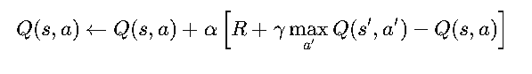
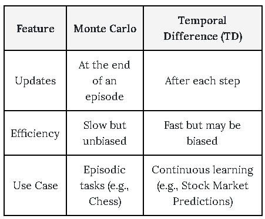
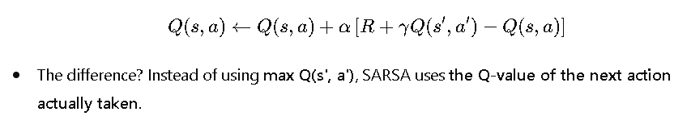
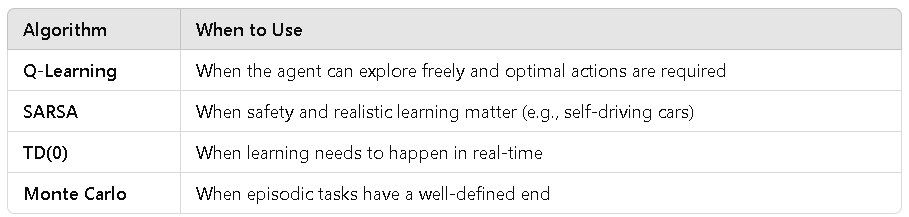

Mastering Temporal Difference Learning and Q-Learning
In our previous discussions, we explored Policy Evaluation, Policy Iteration, and Value Iteration—powerful methods for solving Markov Decision Processes (MDPs). Now, let's dive into the heart of model-free reinforcement learning: Temporal Difference (TD) Learning and Q-Learning.
If Value Iteration and Policy Iteration relied on having a model of the environment, what happens when we don’t know the transition probabilities or rewards? That’s where TD Learning shines—learning directly from experience, just like we do in real life!
1. Temporal Difference (TD) Learning: Learning from Experience
Imagine you’re learning to drive. The first time you take the wheel, you don’t have a perfect model of how the car will respond, but you learn by doing—adjusting your actions based on immediate feedback. TD Learning operates the same way: instead of waiting until the end of an episode (as in Monte Carlo methods), it updates estimates step-by-step using real-time experience.
The TD(0) Update Rule
The fundamental TD update rule is:
V(s) ← V(s) + α [R + γ V (s′) − V(s) ]
where :
- V(s) is the estimated value of state 𝑠.
- R is the observed reward
- γ is the discount factor
- V(s′) is the estimated value of the next state
- α is the learning rate
Rather than waiting for an entire sequence to end (like Monte Carlo learning), TD Learning makes updates at each step, refining value estimates on the go.
Real-Life Example: Learning a New Language
If you start learning Spanish, you don’t wait until you finish an entire textbook before updating what words you know. Instead, you adjust your understanding after each conversation. This is exactly how TD Learning works—updating knowledge step-by-step rather than in one big batch.
2. Q-Learning: The Foundation of Modern RL
Now, let’s talk about Q-Learning, one of the most important reinforcement learning algorithms, used in everything from game-playing AI (like AlphaGo and Deep Q-Networks) to robotics.
While TD Learning focuses on state values, Q-Learning improves action values by learning an optimal policy through trial and error.
The Q-Learning Update Rule
The core update equation for Q-Learning is:
where :
- Q(s,a) is the quality of taking action 𝑎 in state 𝑠
- R is the immediate reward received
- γ is the discount factor
- maxa′ Q(s′ , a') estimates the best possible future reward,
- α is the learning rate
Breaking It Down: Learning by Trial and Error
Imagine a robot vacuum trying to clean a room. Initially, it moves randomly, bumping into obstacles and learning which actions (turn left, turn right, move forward) result in successful cleaning. Over time, it optimizes its policy—favoring actions that lead to maximal cleaning efficiency.
Key Feature of Q-Learning:
- Off-Policy Learning : Unlike methods like SARSA (which we’ll discuss next), Q-Learning learns from the greedy best action, regardless of the actions actually taken.
3. Monte Carlo vs. TD Learning: Key Differences
Monte Carlo learning is like playing an entire chess game before learning what worked, while TD Learning is like adjusting your strategy after every move.
4. SARSA: The On-Policy Counterpart to Q-Learning
While Q-Learning learns from the best possible action, SARSA (State-Action-Reward-State-Action) updates the policy based on the action actually taken, making it an on-policy method.
SARSA Update Rule

Real-Life Example: Teaching a Teenager to Drive
- Q-Learning (Off-Policy): The AI learns the best theoretical driving strategy, even if it takes suboptimal actions.
- SARSA (On-Policy): The AI learns from its own actual driving mistakes, making it safer for real-world training.
SARSA is often preferred for training self-driving cars because it considers what the agent actually does, rather than assuming optimal actions.
5. When to Use Which Algorithm?

Final Thoughts: The Power of Learning from Experience
Temporal Difference Learning, Q-Learning, and SARSA have revolutionized AI. Whether it’s teaching robots, training game AIs, or optimizing stock trading, these methods mimic human learning—making AI smarter with every step.
In the next section, we’ll explore Deep Q-Networks (DQN) and how neural networks help scale reinforcement learning to complex environments. Stay tuned! 🚀